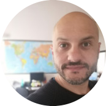
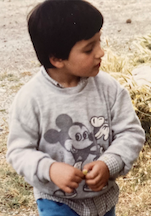

|  |
Marco TarantinoFull Stack Web Developer student at Udemy👨🏻💻 At the moment I am following a path leading me toward a new job concept💡 I am temporarily not available for work hiring📍 |
Aug 2021- Sep 2022 Sales agent at Green Power Energia ♻️
Jan 2015- Sep 2021 Vessels operations manager at Saimare Gioia Tauro & Cagliari S.r.l. 🚢
Apr 2012- May 2014 Vessels and documentation operator at Partenopea Shipping LTD🚢
Jul 2010- Jun 2011 European Volunteer at Ländliche Erwachsenbildung Thüringen 🇪🇺
Jun 2008-Oct 2009 Collection Advisor at Barclaycard International LTD Dublin 🏦
| Microsoft 💻 | ★★★★★ | iOS 🍏 | ★★★★★ | Office Package 📝 | ★★★★☆ | Web Development 🌎 | ★☆☆☆☆ |
|---|---|---|---|---|---|---|---|
| Italian 🇮🇹 | ★★★★★ | English 🇬🇧 | ★★★★☆ | Spanish 🇪🇸 | ★★★★☆ | German 🇩🇪 | ★★★☆☆ |
I love hiking and have a passion for mountain landscapes including, rivers and wild animals.
In 2010 I achieved a "diploma" of Pizza Baker and I still love doing it as passion or alternative job.
During my university studies I was speaker at a Radio Broadcast.
|  |
I was born on 16th August 1982 in Calabria. A Southern Region of Italy. I happly grew up there until I moved to Siena where I started my studies. I traveled a lot both for work and for pleasure. At the moment I live in Cagliari (Sardinia) but for details and contacts please go to the below link. Contact me |